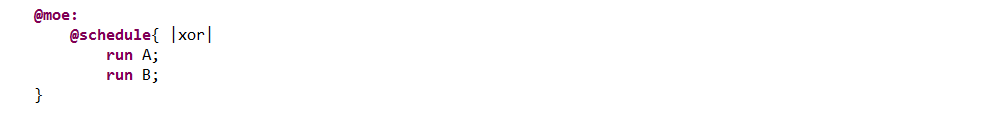
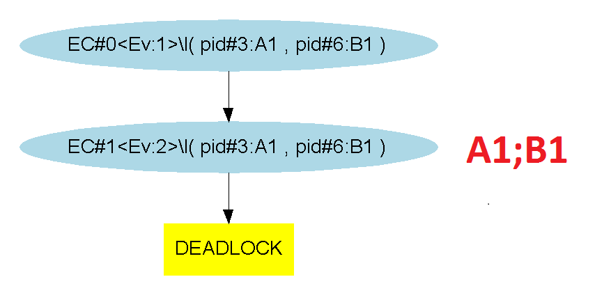

Considering 2 processes : P and Q, with exclusivity, both processes are evaluated from the initial context, i.e. without taking into consideration the evaluation of the other.
Applying this on our most basic example, the "@moe:" section looks like :
When exploring the different paths with the symbolic engine Diversity realizes that the system is in a deadlock. Indeed, as both ""A1to2" and "B1to2" transitions can only succeed, the system is bound to indefinitely stay in the initial context. The following graph is the same for any number (>1) of evaluation steps we choose to simulate :
